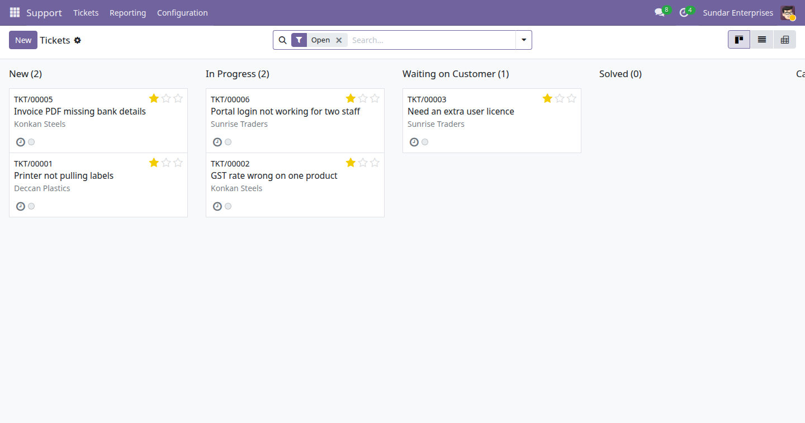

A customer writes in, and the request becomes a numbered ticket that belongs to a team, has an owner, and sits in a stage on a Kanban board. Drag it across as the work moves on. When it lands in a closing stage the closing date is recorded for you. Chatter, followers and scheduled activities come as standard, so the whole conversation stays on the record.

The Tickets Kanban board filtered on Open: five numbered tickets (TKT/00001 to TKT/00006) with their customer and priority stars, sitting in the New, In Progress, Waiting on Customer and Solved columns.
Every ticket takes a unique reference from a sequence, so it can be quoted on the phone or in an email and found again instantly.
A team has members and an optional default assignee. Members see their team's tickets; the default assignee picks up anything created without an owner.
Ordered stages, global or specific to one team, each with a folded flag for the Kanban and a closing flag that stamps the closing date.
Drag and drop between stages, bulk edit from the list, and a form carrying the description, tags, priority and the full chatter.
My tickets, unassigned, my teams, open, closed, urgent, blocked and opened this month, with group by stage, team, assignee, priority or customer.
A pivot and a bar chart of tickets by team, assignee and stage, built straight on the ticket records rather than a custom SQL view.
E-Way Bill Expiry Watch (India) · Indian Financial Year Numbering · GST Outward and Inward Summary (India) · Rupee Amounts in Words (Lakh and Crore) · Indian Invoice Print Extras · MSME Vendor Payment Tracking (India) · India Partner Identifier Validation · Indian Payroll Components (PF, ESI, PT) · India TDS Rate and Deduction Register · UPI Payment QR on Invoices (India) · Fixed Asset Register (Lite) · Branches (Lite) · Account Budgets (Lite) · Knowledge Base (Lite) · Label Designer (Lite) · Material Request (Lite) · Password Vault (Lite) · Proforma Invoice
Need the full version? The drkds Support Desk app adds service level policies, a customer portal, satisfaction ratings, canned replies and ticket merging.
Odoo 19 Community · Licence LGPL-3 · Free and open source
Part of the drkds Indian SME suite for Odoo 19 Community.
Support: jyotinboghani@gmail.com · drkdsinfo.com